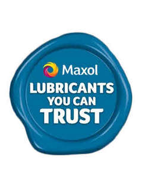

Trade Mark Journal No.2025/019 9 May 2025
UK00004193984 24 April 2025 (4,35,37)

- Class 4
- Petrol, petroleum, petroleum products, diesel oil, oil, crude oil, refined oil, fuel-oil and fuels, dry gas and natural gas; lubricants; motor fuel; paraffin; gasoline; illuminating oils and greases.
- Class 35
- Direct mail advertising; shop window dressing; supply and rental of publicity material; market research; marketing studies; public relations; purchasing management; business management services; book keeping and statements of account, all relating to the purchase of and payment for aviation and automotive fuel and related services; accounting; statements of account; business appraisals; auditing; book keeping; office machine and equipment rental; data processing services; computerised business management services; registration services for equipment or cards used for financial transactions; organisation of competitions for advertising or marketing purposes; business information; business and commercial management consultancy and assistance services; accountancy and tax preparation services; placement of advertising including advertising and promotions on the Internet; provision of information for business purposes on the Internet; provision of on-line procurement facilities; photocopying services; business advice on the purchase of goods for sale through convenience stores, service stations, take-away food counters, bakeries, cafes, restaurants, and vending machines; office services; management of customer loyalty, incentive or promotional schemes; commercial advice on the operation of bakeries, take-away food counters, cafes, restaurants, service stations and convenience stores; procurement of stock for retail stores; the bringing together, for the benefit of others, of a variety of fuels, lubricants, oils, car accessories, fresh food, vegetables, fresh flowers, frozen food, ready meals, snacks, confectionery, cake, biscuits, dairy products, ice cream, alcoholic and non-alcoholic beverages, cigarettes and tobacco products, newspapers, magazines, stationery, small toys, toiletries, pharmaceuticals, household cleaning goods and small consumer electrical goods, enabling customers to conveniently view and purchase those goods in a convenience store, a filling station or any convenience store located in a filling station; data processing services; purchasing management consultancy.
- Class 37
- Vehicle service stations and vehicle fuelling station services; motor vehicle wash; furnace installation and repairs; vehicle tyre re-fitting and repair; heating equipment installation and repair; laundry services; leather care, cleaning and repair; construction of power generating plants; installation, maintenance, repair and servicing of gas supply and distribution apparatus and instruments; repair, maintenance and servicing of gas apparatus and instruments; machinery installation, maintenance and repair; pipeline construction and maintenance; pump repair and maintenance; operation of service stations.
McMullan Bros. Limited
Representative: FRKelly